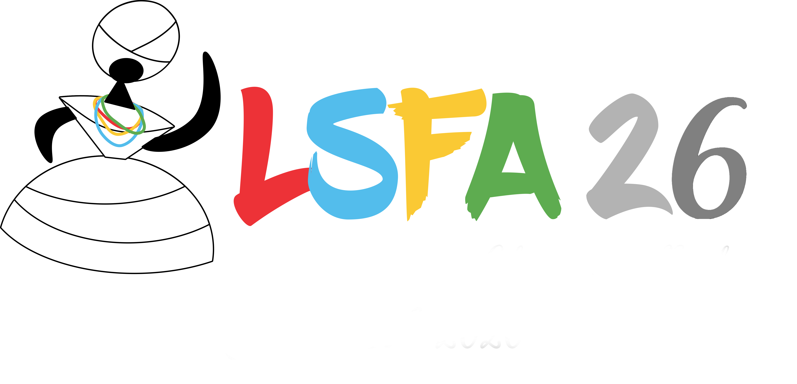

The 21st International Symposium on Logical and Semantic Frameworks, with Applications (LSFA 2026) is an affiliated workshop of the to 11th International Conference on Formal Structures for Computation and Deduction (FSCD 2026) to be held in Lisbon, Portugal, 18 - 19 July, 2026, as part of FLoC.
LSFA is an International Symposium on Logical and Semantic Frameworks with Applications launched in 2006. Logical and semantic frameworks are formal languages that represent logics and languages, as well as computational, AI and deductive systems. These frameworks provide mathematical foundations for the formal specification of systems and programming languages, supporting tool development and reasoning.
The LSFA series is a platform that fosters collaboration, bringing together theoreticians and practitioners. LSFA aims to promote techniques and results from the theoretical side, ranging from well-established ones such as lambda calculus and type theory to state-of-the-art ones such as machine learning, and provide feedback on integrating, implementing and using such methods and results from the practical side.
See https://lsfa-workshop.github.io/ for further information.
Logical and semantic frameworks are formal languages used to represent logics, languages and systems. These frameworks provide foundations for the formal specification of systems and programming languages, supporting tool development and reasoning.
Previous editions:
Contributions should be written in English and submitted in the form of full papers (with a maximum of 16 pages excluding references) or short papers (with a maximum of 6 pages excluding references). They must be unpublished and not submitted simultaneously for publication elsewhere.
The papers should be prepared in latex using EPTCS style. The submission should be in the form of a PDF file uploaded to HotCRP:
The following papers have been accepted for presentation at LSFA 2026.
Registration for LSFA 2026 is handled through the FLoC registration system.
Early registration is available until June 1.
LSFA 2026 will take place in Lisbon, Portugal. Venue details and travel information are available at the FLoC website.
The proceedings of LSFA 2026 will be made available here once finalized and published.